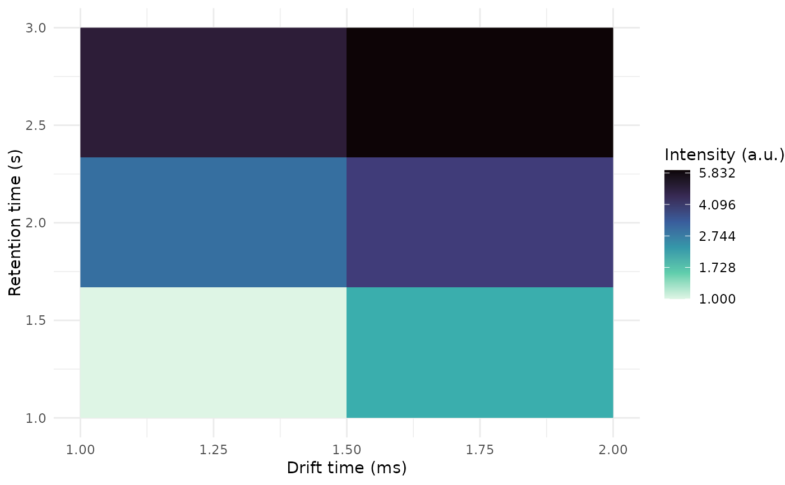

plot-GCIMSSample-ANY-method.RdTopographical plot of a GCIMSSample object
# S4 method for GCIMSSample,ANY
plot(
x,
dt_range = NULL,
rt_range = NULL,
...,
remove_baseline = FALSE,
trans = "cubic_root"
)A GCIMSSample object
A numeric vector of length 2 with the drift time range to plot (in milliseconds)
A numeric vector of length 2 with the retention time range to plot (in seconds)
Ignored
Set to TRUE to subtract the estimated baseline first
The transformation to the intensity values. "cubic_root" is the default. "intensity" is also valid.
See the trans argument in ggplot2::continuous_scale() for other possibilities.
A plot of the GCIMSSample
dummy_obj <-GCIMSSample(
drift_time = 1:2,
retention_time = 1:3,
data = matrix(1:6, nrow = 2, ncol = 3),
gc_column = "Optional column name",
drift_gas = "nitrogen",
drift_tube_length = 98.0 # in mm
)
plot(dummy_obj)
